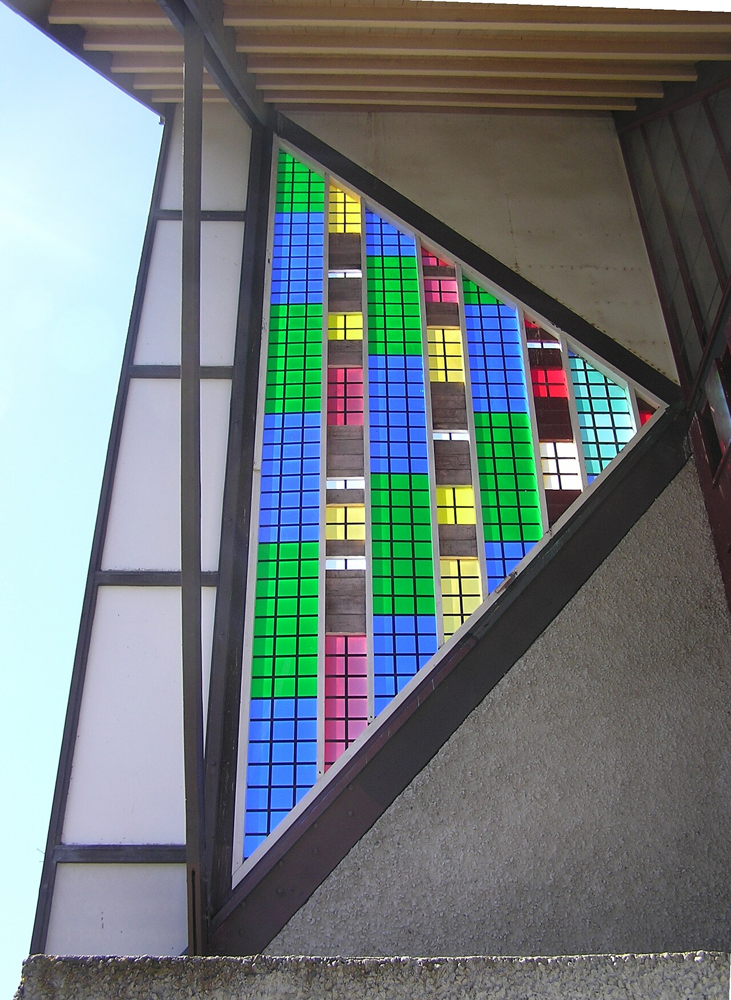
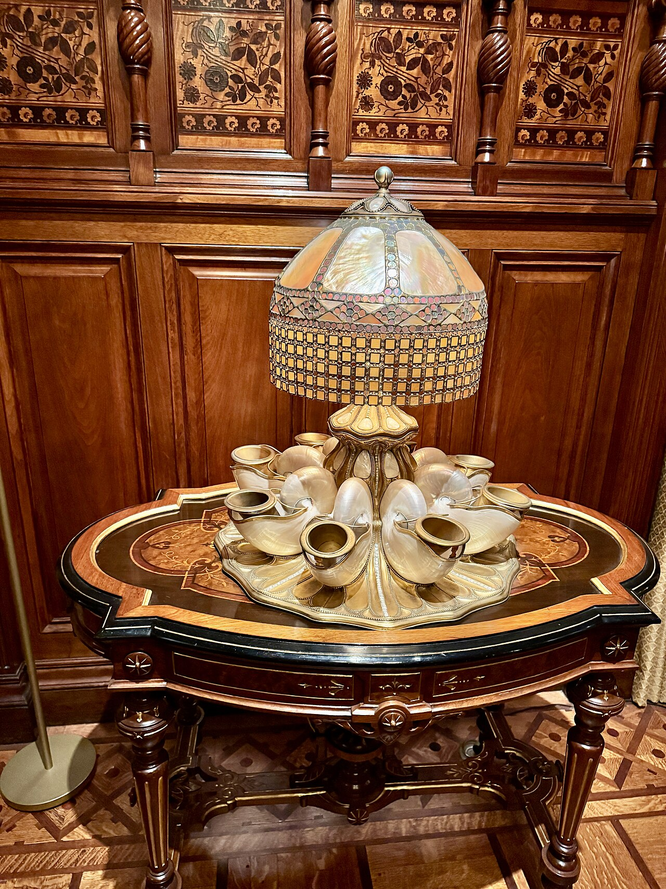

Browse the collections below - and if you don't see exactly what you're imagining, ask. Custom orders are always welcome.
Warm light through colored glass - table lamps and night lights that turn a corner of a room into something special.
Hang one in a sunny window and watch the light do the rest. Designs for every taste.
Judaic pieces with meaning - mezuzah cases, hamsas and blessings for the home.
Glass and candlelight belong together. Holders for Shabbat, holidays and every day.
Pieces that make the holidays glow - ask about this year's designs early.
Frames, clocks and household pieces - everyday objects, made beautiful.


Heirloom blankets and pillows in warm colors - made to be used, loved and passed down.
Hand-crocheted rugs that make a room feel like home the moment they touch the floor.
Soft friends for small people - dolls and stuffed animals made with care.
Hats and more - practical pieces with handmade charm.
Textile art for the walls - color and warmth for any room.
Ready-to-give sets for new babies, new homes and new beginnings.